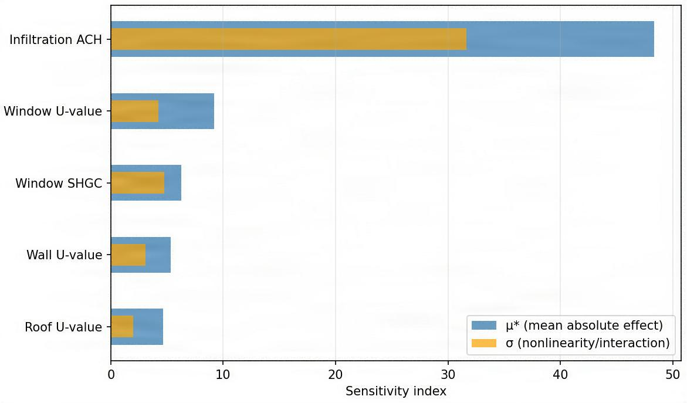
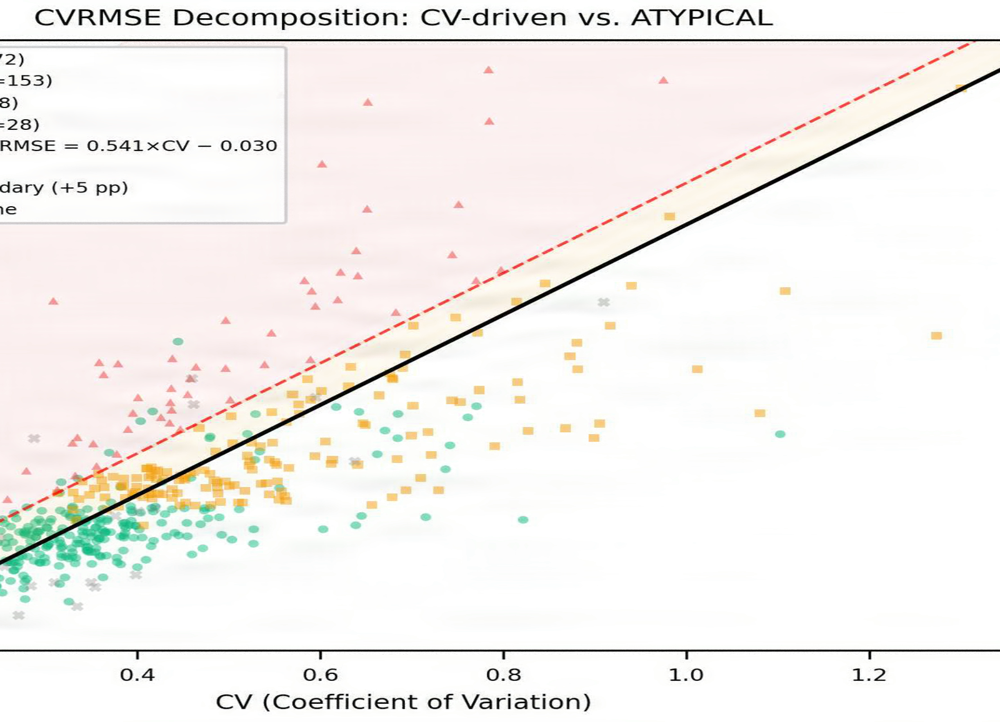
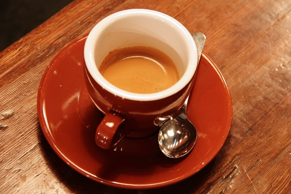
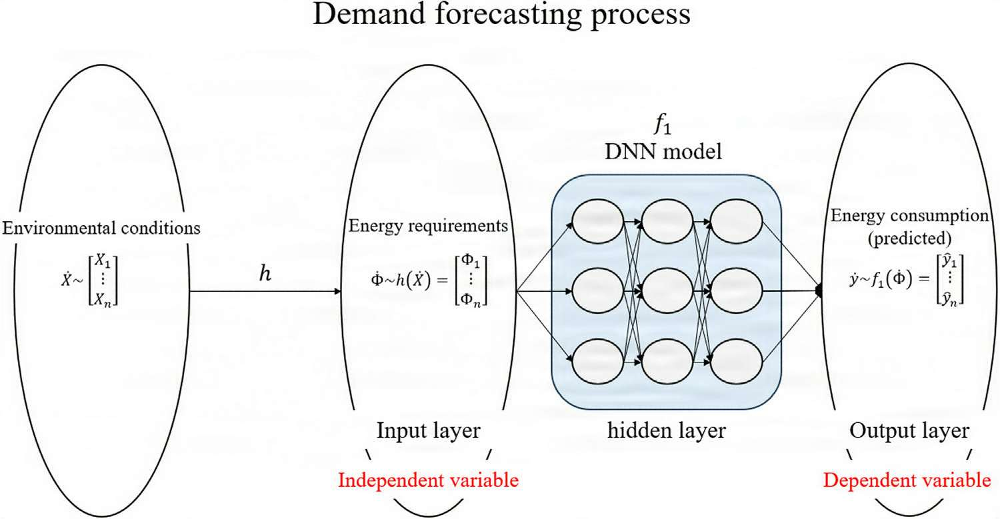
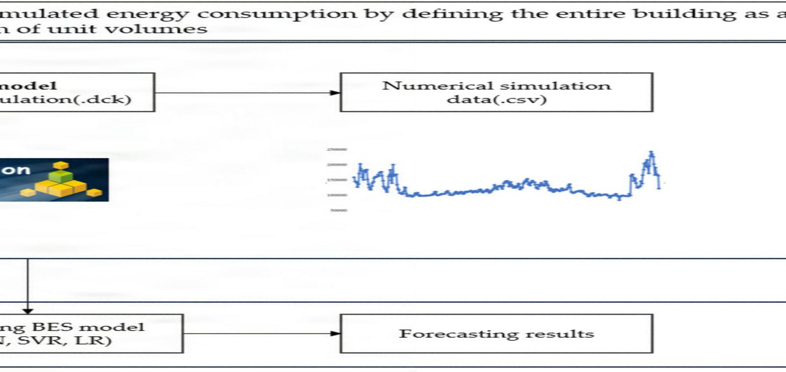
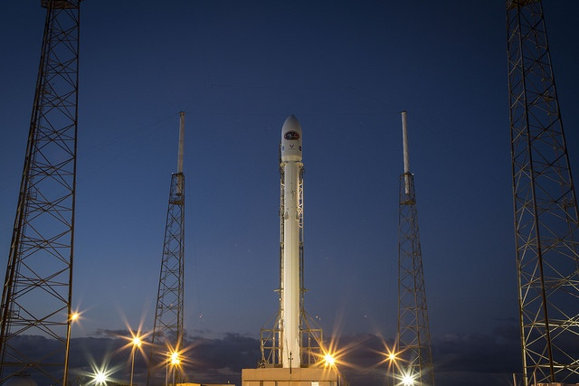

자동 발견
출처증명은 증명서를 붙이는 것만으로는 쓸모가 적습니다. 저작권 침해는 피해자가 알아차려야 대응이 시작되기 때문입니다. 이 페이지는 순찰기가 웹 페이지를 돌며 연구실 그림이 어디서 어떻게 쓰이고 있는지 자동으로 찾아낸 결과입니다.
점검 시각 2026-11-14T01:12:28+0900 · 페이지 3곳 · 이미지 9장 · 우리 그림 6건 중 6건 발견 · 상관없는 이미지 3장 중 잘못 걸린 것 0건(표본이 작아 오탐률 추정은 아님)
| 페이지 | 이미지 | 실제로 한 일(정답) | 순찰기 판정 | 찾아낸 원본 |
|---|---|---|---|---|
| blog |  | JPEG 재압축 품질 74 (WAVES 0.2) | 찾음 다시 저장·압축됨(지각 해시 거리 0); 워터마크 GEL-0005 확인 | 외피 변수별 민감도 지수 |
| blog |  | 크롭 면적 0.8 (WAVES 0.4) | 찾음 워터마크 GEL-0001 확인 | CVRMSE 분해: 변동계수 요인과 비정형 요인 |
| blog |  | 상관없는 이미지(CC0) | 매칭 없음(정상) | |
| forum |  | 브라우저 화면 캡처 1920×1080 | 찾음 워터마크 GEL-0002 확인 | assets/journey/0-published.png |
| forum |  | JPEG 재압축 품질 58 (WAVES 0.4) | 찾음 다시 저장·압축됨(지각 해시 거리 0); 워터마크 GEL-0006 확인 | 수요 예측 과정 |
| forum | 상관없는 이미지(퍼블릭 도메인) | 매칭 없음(정상) | ||
| news |  | 크롭 면적 0.6 (WAVES 0.8) + JPEG 품질 74 | 찾음 잘라 쓰거나 돌려 씀 — 원본에 맞춰 되돌린 뒤 워터마크 확인(특징점 173/1029개 일치, 블록 DCT z 6.7, TrustMark GEL-0008) | BES 모델 구성과 보정 절차 |
| news |  | 받는 사람 B의 사본이 재압축되어 유출 | 찾음 다시 저장·압축됨(지각 해시 거리 0); 워터마크 RCV-B002: 자료 요청자 B에게 보낸 사본 | 건물 유형별 시간대 오차 패턴 |
| news |  | 상관없는 이미지(퍼블릭 도메인) | 매칭 없음(정상) |


순찰 대상은 실습용으로 만든 가짜 재게시 페이지입니다(목록). 순찰기는 robots.txt를 지키고 요청 사이에 간격을 둡니다. 처음 판(11-13)은 크게 자른 뒤 다시 압축한 그림 1건을 놓쳤습니다. 지금은 앞 단계에서 못 찾으면 특징점으로 후보 원본을 고르고, 원본에 맞춰 되돌린 뒤 워터마크를 읽어 확인합니다(블록 DCT 키는 비공개라 발행자 쪽에서만 할 수 있는 단계).
무엇이 되고 무엇이 안 되나
| 되는 것 | 공개된 웹 페이지에 다시 올라온 그림을 자동으로 찾고, 원래 발행본과 증명서로 연결하고, 어떻게 바뀌었는지(증명서 삭제, 재압축, 크롭) 알려 준다. 받는 사람별 식별자를 심었다면 누구의 사본인지도 안다. |
|---|---|
| 안 되는 것 | 누가 화면을 캡처했는지, 누가 내려받았는지는 알 수 없다. 그 일은 상대방 기기 안에서 일어나고, 그림 파일은 스스로 신호를 보낼 수 없다. 메신저 대화방처럼 공개되지 않은 곳도 순찰할 수 없다. |
| 실제 서비스 | 같은 원리로 동영상은 유튜브 Content ID, 이미지는 Pixsy·Copytrack 같은 서비스가 웹을 순찰해 권리자에게 알려 준다. |